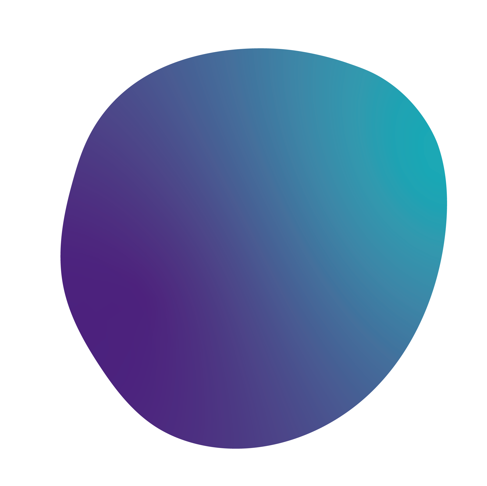

About The Festival
The NYU Entrepreneurs Festival is a weekend-long celebration of NYU’s thriving entrepreneurial community, offering inspiration and guidance to both budding and seasoned entrepreneurs.
Open to aspiring entrepreneurs, established business professionals, and anyone curious about entrepreneurship, The NYU Entrepreneurs Festival is the largest student-run event of its kind. Through talks, workshops, & roundtables, over 1000 people gather to exchange ideas, lessons, and inspiration.
Check out last year's festival in this video!
Events Include:
Click on the following to learn more!
100+
Speakers
60+
Startups
21
Roundtables
4
Keynotes
3
Workshops
6
Panels

Idea Jam

Pitch Competition

After Party
Powered By: Google Cloud
Keynote Speakers


- Co-Founder and President, Ben & Jerry’s Foundation
Jeff Furman
Stern '65 | Law '68
- Co-Founder and President, Ben & Jerry’s Foundation
- Corporate Board Member, Emeritus, Ben & Jerry’s”
Click to read more

Nobu Nakaguchi
Tisch ’10
Chief Design Officer and Co-Founder of Zola
Click to read more


Maryellis Bunn
CAS
CEO and Founder of Museum of Ice Cream
Click to read more

Andrea Breanna
Gallatin '97 | Tisch '03
Founder and CEO of RebelMouse
Click to read more